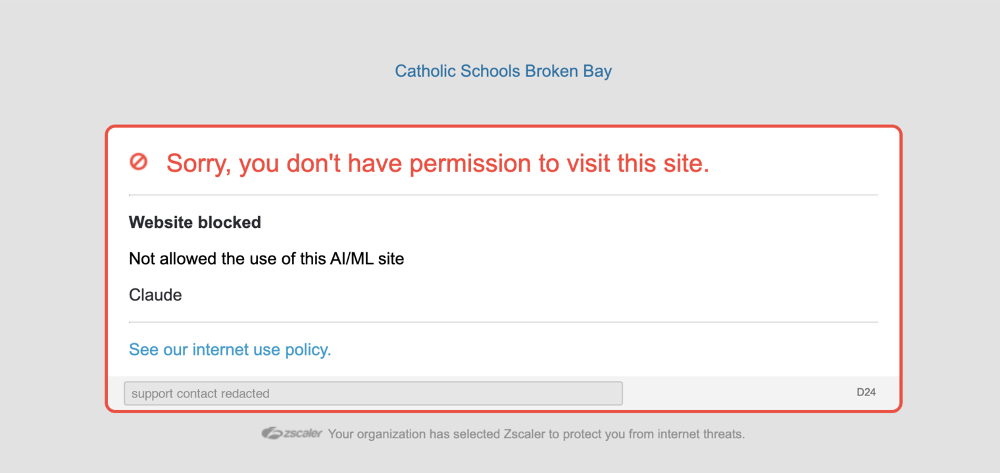

code.claude.com/docs/en/overview — the Claude Code
documentation — on the school network. Cropped to remove browser tabs and bookmarks;
the support contact is redacted. Nothing else is altered.
A student campaign · Catholic Schools Broken Bay
LET STUDENTS CODE
St Leo's Catholic College in Wahroonga has blocked every single AI tool but 1: Microsoft Copilot.
You can say things like "students could use AI to cheat" or "AI rots away their nonexistant brains" and those are valid, but if thats really what the school cared about, they would have also blocked Microsoft copilot.
What that page tells us
- Filter
- Zscaler — an enterprise filter whose AI/ML control is a list of named applications
- Rule
- “Not allowed the use of this AI/ML site”
- Application
- Listed by name: Claude
- Blocked page
- code.claude.com/docs — the documentation, not the tool
- Set by
- Catholic Schools Broken Bay — a system-level rule, not one school’s
Zscaler’s AI/ML control isn’t one switch. It’s a list of applications, each allowed or blocked on its own. Nobody bulk-enabled a category here. Somebody went down a list, app by app, and made individual calls. Claude was ticked. Copilot wasn’t.
That is a decision a person made and can explain. We would like them to.
01 — What actually happened
A filter category is not a policy
A lot of school blocks really are one tick: the filter ships with an “AI & Chatbots” category, somebody switches it on, and a few hundred domains disappear at once. That would have been the charitable explanation here — a default nobody looked at.
The block page rules it out. Zscaler’s AI/ML control lists applications individually, and the page names one: Claude. So this wasn’t a category switch. It was a series of per-application decisions, and the results tell you what those decisions were:
| Service | Underlying model | Status |
|---|---|---|
| Microsoft Copilot | OpenAI GPT models + Microsoft’s own | Allowed |
| ChatGPT | OpenAI GPT models | Blocked |
| Claude / Claude Code | Anthropic Claude models | Blocked |
| Google Gemini | Google Gemini models | Blocked |
Copilot runs on the same OpenAI models as the ChatGPT sitting one row below it. If generative AI were genuinely judged too risky for students, the tool at the top of that table would be blocked too. It isn’t. So the line wasn’t drawn at risk. It was drawn at vendor.
And because these are per-application settings, somebody chose each one. There is a person who allowed Copilot and blocked Claude on the same screen, on the same afternoon. We are not asking who they are. We are asking what the reason was, because right now the only visible difference between the row that passed and the rows that didn’t is which company’s name is on it.
same models. different logo. different answer.02 — The ask
Three things. All of them reasonable.
-
Unblock Claude Code for students who write code.
Claude Code is a command-line developer tool. It runs in a terminal next to git and a text editor, and it is not a chatbot with a homework box in it. Blocking it has more in common with blocking a code editor or Stack Overflow than with blocking a cheating site. The students it stops are the ones teaching themselves to build things.
-
End the single-vendor exception.
Either the major assistants are acceptable for student use or they aren’t. If Copilot is allowed, ChatGPT, Claude and Gemini need either the same access or a published, specific reason why one vendor clears a bar the others fail. “It came with the Microsoft licence” is not a safeguarding argument.
-
Say what the internet use policy actually says about AI — and add a way to appeal.
The block page links to an internet use policy, so one exists. What isn’t in it is anything that explains why Claude is blocked and Copilot isn’t, who holds that decision, or how a student or teacher asks for a site to be reconsidered. A policy you can’t appeal and can’t find the reasoning for is a rule, not a policy. Publish those three things and this campaign is over.
03 — The objections
Everything they’ll say in the meeting
Microsoft Copilot can. It writes essays, for subjects we do teach, on demand, and it is the one tool the filter lets through. The block catches the tool that cannot affect a grade and permits the one that can.
04 — Scope
What we are not asking for
What this is actually for
Most of us are not asking for a homework tool. We write code in our own time — personal projects, things nobody set and nobody marks. That is the use this block actually stops, because free time at school means break, lunch and study periods, on the school network, on school laptops.
Some of us are teaching ourselves a subject this school does not offer. That is supposed to be the good version of a student. Right now the network is configured to stop it.
We know “I want it for my own projects” is a weaker thing to ask for than “I need it for my assessed work.” It is also the true thing, and we would rather bring you a true one. If the answer is that learning to build software in your own time isn’t reason enough to look at a blocked site again, we would like that in writing as well.
“independent, curious learners” — your words, not ours- We are not asking for the content filter to be weakened, or for monitoring and safeguarding software to be removed. Leave all of it on.
- We are not asking for permission to submit AI-written work. Set that rule at the assessment level, as strictly as you like, and enforce it there.
- We are not asking anyone to be disciplined, named or blamed. We are asking for a decision to be reviewed by someone with the authority to make it.
- We are not asking students to bypass the filter. Don’t — it hands them the excuse to make this about your conduct instead of their policy.
If the answer is a supervised compromise — opt-in access for the students who ask for it, a signed agreement, a teacher sponsor, revocable the moment it is misused — we’ll take it and say thank you. We are not trying to win an argument. We are trying to get a tool back.
And before someone points it out
This site is hosted on GitHub Pages. GitHub is owned by Microsoft. We know.
That isn’t an oversight — it’s the whole argument in one line. We are not boycotting Microsoft. We use their tools every day, most of us without complaint, and this page is served off their infrastructure for free. The objection was never to a vendor. It is to a block that nobody reviewed, nobody signed, and nobody will explain.
pick a better argument than that one05 — Sign
Put your name to it
By signing, I’m asking Catholic Schools Broken Bay to unblock Claude Code for students who write code, to explain why one AI vendor is permitted and the rest are not, and to publish who owns that decision and how to appeal it.
- No signatures yet. Someone has to be first — it may as well be the person who got told no.
06 — Do this today
A petition alone never moved an IT department
Signatures show the ask isn’t one annoyed student. What actually forces a review is a written request that lands in an inbox belonging to someone who has to answer it. Send this. It takes ninety seconds.
Ready to send
Subject: Request to review the AI/ML block on Claude Dear [name / Digital Learning], I'm a student at [school], part of Catholic Schools Broken Bay. I'd like to ask for a review of the Zscaler AI/ML rule that blocks Claude and Claude Code. I'll be straight about why I want it: I write code in my own time. Not for a class and not for anything that gets marked. I do a lot of that at school, in breaks and study periods, on the school network. It may help to say plainly that this school does not offer Computer Science. Claude Code is a tool for writing software, and nothing here is assessed on code, so I don't think it can be used to gain an advantage in any subject we actually teach. Microsoft Copilot, which is permitted, writes essays for subjects we do teach. Three things I'd like to understand: 1. Microsoft Copilot is permitted while Claude, ChatGPT and Gemini are not. Copilot runs on the same OpenAI models as ChatGPT. Since Zscaler's AI/ML control lists applications one at a time, this looks like a decision somebody made per application rather than a category default, so I'd like to know what it was based on. 2. The block also covers the documentation at code.claude.com/docs. Whatever the concern is about using the tool, I can't see how it extends to reading about how it works. 3. The block page links to an internet use policy, but I can't find anything in it that explains the AI/ML rule, says who owns it, or sets out how to ask for a site to be reconsidered. If that exists, please point me to it. I'm not asking for filtering or monitoring to be reduced, and I'm not asking for permission to hand in AI-assisted work. An opt-in arrangement with a teacher sponsor and a signed agreement would completely answer this. Students supporting this request have signed here: [link] Could you tell me who owns this decision, and whether it can be reviewed? Many thanks, [your name], [year group]
And four things that cost you nothing
- 01Screenshot Copilot working. We have the block. We do not yet have its opposite. A capture of Copilot answering a prompt on the same network, on the same day, is the other half of this argument — and it is the half nobody can argue with. Send it in and it goes on this page next to the block.
- 02Get one teacher to co-sign. A Computer Science or Design & Technology teacher asking the same question changes it from a student complaint into a staff concern. This is the single highest-value thing on this page.
- 03Put it on the student council agenda. It creates minutes. Minutes create a paper trail that someone eventually has to respond to.
- 04Ask for the decision in writing. Not a reversal — just the reasoning, the owner, and the date. Requests that are hard to justify in writing tend to get quietly revisited.
07 — Escalation
You don’t know who blocked it. Find out.
The block page answers half of this already: it is headed Catholic Schools Broken Bay, not the name of any one school. That means the rule lives with the system office, and the people at your own school almost certainly cannot lift it even if they agree with you. Start there anyway — skipping a rung turns a potential ally into an obstacle — but know where it has to end up.
-
Your school’s IT support
One question, and it isn’t “please unblock it”: “Is this rule set here or at the system office, and who owns it?” You are not arguing yet, you are confirming the block is out of their hands and getting the name of whose hands it is in. Expect them to say Zscaler is managed centrally. That answer is what you need.
-
The closest thing this school has to a Computer Science teacher
We do not offer the subject, so there may be no obvious person. Try whoever teaches Design and Technology or Information and Software Technology, whoever runs a robotics or coding club, or a maths teacher who writes code. You are looking for one adult willing to say “this is a legitimate tool and this student should have it.” That sentence from a staff member travels further than anything a student can write. Show them what you are building rather than arguing the principle.
-
Your Principal
A principal can raise a system-level setting with the system office on the school’s behalf, which is exactly what you need to happen. Lead with the three demands and the opt-in compromise. Bring the signature count and the teacher.
-
Catholic Schools Broken Bay — digital learning / IT services
Where the Zscaler policy actually lives, and the only place the block can be changed. By now you should arrive with a principal’s backing rather than alone. Ask for the reasoning, the owner, and the appeal route in writing.
-
The Director of Schools, or the Catholic Schools Broken Bay board
Slow, formal, hard to ignore, and only worth it if the system office won’t engage at all. “Does our AI policy explain why one vendor is permitted and the others are not?” is a question a board is obliged to have an answer to.